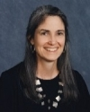
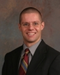

Faculty News
May 2007 Issue
 |
Marjorie
Corman Aaron Professor of Practice and Director, Center for Negotiation & Problem Solving Profile of Professor Aaron :: Center for Practice in Negotiation & Problem Solving |

 |
Marianna
Brown Bettman Invited Professor of Law Marianna was selected as one two people from her high school graduating class of 1962 as “runners up” for the Walnut Hills High School Alumni Hall of Fame. She hosted a group of students from the College at the oral argument before in the U.S. Court of Appeals for the Sixth Circuit in Hamilton County Board v. National Football League. Marianna was quoted in Judge Painter: Say What? Judge's Pithy Writing Style Gets His Opinions Noticed, Cincinnati Enquirer, Apr. 16, 2007. |
 |
Joseph
Biancalana Judge Joseph P. Kinneary Professor of Law |
 |
Lou
Bilionis Dean and Nippert Professor of Law Lou hosted guest judges to the 2007 Rendigs Products Liability Moot Court Competition and presided at the Senior Banquet. His article, Eighth Amendment Meanings from the ABA’s Moratorium Resolution, 61 L. & Contemp. Probs. 29 (1998), was cited in Corinna Barrett Lain, Furman Fundamentals, 82 Wash. L. Rev. 1 (2007). |
 |
Kristin Kalsem Professor of Law |
 |
A.
Christopher Bryant Professor of Law Chris presented The Supreme Court's Drug Problem at Chase. His article, Remanding to Congress: The Supreme Court's New "On the Record" Constitutional Review of Federal Statutes, 86 Cornell L. Rev. 328 (2001) (with Timothy J. Simeone), was cited in in Kevin M. Stack, The Constitutional Foundations of Chenery, 116 Yale L.J. 952 (2007). |
 |
Paul
L. Caron Charles Hartsock Professor of Law and Director, Faculty Projects Paul launched three new blogs as part of his Law Professor Blogs Network:
Paul published several issues of his Tax Law Abstracts e-journals:
Two of Paul’s articles were cited:
|
Jacob Cogan Assistant Professor
of Law Jacob’s article, Competition and Control in International Adjudication, was accepted for publication in the Virginia Journal of International Law. He presented the article at Indiana-Bloomington as part of the College’s Scholar Exchange Program. The article was selected for a works-in-progress panel at the Association of American Law Schools—American Society of International Law Joint Conference on International Law: What Is Wrong with the Way We Teach and Write International Law in Vancouver, Canada, in June. |
 |
Margaret Drew Professor of Clinical Law and Director, Domestic Relations/Violence
Clinic Margaret attended a meeting of the ABA Commission on Youth at Risk in Washington, D.C. She attended the inaugural meeting of community services providers to trafficking victims in Cincinnati. The meeting was held as part of a U.S. Department of Health and Human Services organizing event to build a Cincinnati coalition to build public awareness and a network of services around the issue of Human Trafficking. Margaret attended a Washington, D.C. meeting sponsored by Holland & Knight of the clinical directors at American, Georgetown. Stanford, and Yale to determine how best to meet the civil legal needs of victims of human trafficking. Margaret emceed the annual awards event held by Connections: A Safe Place. The event honors those who have worked to end childhood sexual abuse and to assist abuse survivors. She was quoted in Law Puts Mothers' Duty under Scrutiny, Cincinnati Enquirer, Apr. 2, 2007, at 1A. |
 |
Rafael Gely Judge Joseph P. Kinneary Professor of
Law
Several of Rafael’s articles were cited:
|
 |
Mark
A. Godsey Professor of Law and Faculty Director, Lois and Richard Rosenthal Institute
for Justice, Ohio Innocence Project Mark’s article, Rethinking the Involuntary Confession Rule: Toward a Workable Test for Identifying Compelled Self-Incrimination, 93 Cal. L. Rev. 465 (2005), was cited in Michael S. Pardo, Neuroscience Evidence, Legal Culture, and Criminal Procedure, 33 Am. J. Crim. L. 301 (2006). Mark was quoted in:
|
 |
Ann Hubbard Professor of Law |
 |
Max Huffman Visiting Assistant Professor of Law |
 |
Bert B. Lockwood, Jr. Distinguished
Service Professor of Law and Director, Urban Morgan Institute for Human Rights Profile of Professor Lockwood :: Urban Morgan Institute for Human Rights |
 |
S. Elizabeth Malloy Professor
of Law and Faculty Director, Glenn M. Weaver Institute for Law & Psychiatry Betsy’s article, Something Borrowed, Something Blue: Why Are Disability Law Claims Any Different?, 33 Conn. L. Rev 603 (2001), was cited in Naomi Schoenbaum, It's Time that You Know: The Shortcomings of Ignorance as Fairness in Employment Law and the Need for an "Information-shifting" Model, 30 Harv. J. L. & Gender 99 (2007). Profile of Professor Malloy :: Glenn M. Weaver Institute for Law and Psychiatry |
 |
Bradford C. Mank James
B. Helmer Jr. Professor of Law Two of Brad’s articles were cited:
|
 |
Douglas Mossman Administrative Director,
Glenn M. Weaver Institute of Law and Psychiatry
Doug delivered introductory remarks, Significance of Research on the Human Genome, at the Glenn M. Weaver Institute of Law and Psychiatry symposium, Law, Ethics, Psychiatry, and the Human Genome Project. Two of Doug’s articles were cited:
Doug was quoted in Disturbing Writing, or First Hint of Killer-to-Be?, Cincinnati Enquirer, Apr. 22, 2007, at 1A. |
Rachel Jay Smith Legal Research & Writing Professor |
 |
Michael
E. Solimine Donald P. Klekamp Professor of Law,
Director, Faculty Development and Extern Program Several of Michael’s articles were cited:
|
 |
Adam
N. Steinman Assistant Professor of Law His article, Reinventing Appellate Jurisdiction, was accepted for publication in the Boston College Law Review. The article was featured on several popular law blogs:
Adam was interviewed on Civil Procedure Prof Blog. Two of Adam’s articles were cited:
Adam was a contributor to, and signatory of, an Amicus Curiae brief of law professors in the U.S. Supreme Court case of Powerex Corp. v. Reliant Energy Services, Inc., No. 05-85, argued on April 16, 2007. The case involves, among other things, the right to appeal a U.S. District Court decision remanding a case to state court. Other signatories include his UC colleague Michael Solimine and Harvard Law School professor Arthur Miller, the first Stanley M. Chesley Distinguished Visiting Professor at the College of Law in the Spring 2007 semester. Adam submitted a wonderful rap video entry in TurboTax’s Tax Rap Contest. |
 |
Suja
Thomas Professor of Law Suja presented The PSLRA's Seventh Amendment Problem at Ohio State. Doug Berman (Ohio State) praised Suja’s “terrific faculty workshop” and discussed both articles on Sentencing Law and Policy. Christine Hurt (Illinois) also discussed these articles on Conglomerate. Suja's articles, Why Summary Judgment is Unconstitutional and Re-examining the Constitutionality of Remittitur Under the Seventh Amendment, 64 Ohio St. L.J. 731 (2003), were cited in Richard H. Field, Benjamin Kaplan & Kevin M. Clermont, Civil Procedure: Materials for a Basic Course, and in A. Benjamin Spencer, Civil Procedure: A Contemporary Approach. The AALS selected Suja's proposal for an Open Source program on Implementing Scholarship for the January 2008 annual meeting. Joining Suja on the program will be Jack Chin (Arizona), Paul Giannelli (Case Western), Harold Koh (Yale), and Deborah Rhode (Stanford). Suja was interviewed on Civil Procedure Prof Blog. Her paper, The PSLRA's Seventh Amendment Problem, is one of the Top Ten Most Downloaded Papers over the past sixty days from the SSRN Journal of Litigation. |
 |
Joseph
P. Tomain Dean Emeritus and Wilbert and Helen
Ziegler Professor of Law Profile of Dean Emeritus and Wilbert and Helen Ziegler Professor Tomain |
 |
Verna
L. Williams Professor of Law Verna presented Title IX and Gender Norms as part of a panel discussion on Sticky Cultural Norms: The Transformative Potential of the Title IX sponsored by the Hofstra Institute for the Study of Gender, Law and Policy. |
 |
Ingrid
Brunk Wuerth Professor of Law
|
Faculty News is edited by Paul
L. Caron, Charles Hartsock Professor of Law and Director of Faculty Projects.
Back issues can be accessed from the Faculty News Archive.
| © Copyright 2007, University of Cincinnati College of
Law, Clifton Avenue & Calhoun Street, Cincinnati, OH 45221 |